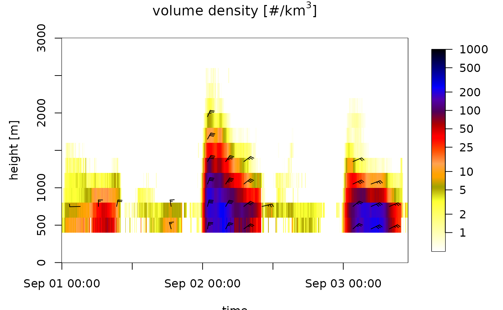
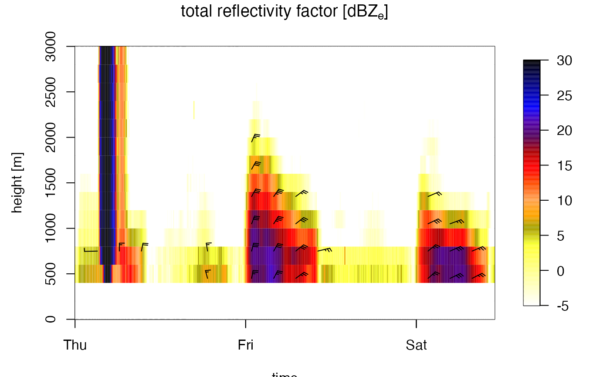

Plot a time series of vertical profiles of class vpts.
# S3 method for vpts plot( x, xlab = "time", ylab = "height [m]", quantity = "dens", log = TRUE, barbs = TRUE, barbs_height = 10, barbs_time = 20, barbs_dens_min = 5, zlim, legend_ticks, legend.ticks, main, barbs.h = 10, barbs.t = 20, barbs.dens = 5, ... )
| x | A vp class object inheriting from class |
|---|---|
| xlab | A title for the x-axis. |
| ylab | A title for the y-axis. |
| quantity | Character string with the quantity to plot,
one of ' |
| log | Logical, whether to display |
| barbs | Logical, whether to overlay speed barbs. |
| barbs_height | Integer, number of barbs to plot in altitudinal dimension. |
| barbs_time | Integer, number of barbs to plot in temporal dimension. |
| barbs_dens_min | Numeric, lower threshold in aerial density of individuals for plotting speed barbs in individuals/km^3. |
| zlim | Optional numerical atomic vector of length 2, specifying the
range of |
| legend_ticks | Numeric atomic vector specifying the ticks on the color bar. |
| legend.ticks | Deprecated argument, use legend_ticks instead. |
| main | A title for the plot. |
| barbs.h | Deprecated argument, use barbs_height instead. |
| barbs.t | Deprecated argument, use barbs_time instead. |
| barbs.dens | Deprecated argument, use barbs_dens_min instead. |
| ... | Additional arguments to be passed to the low level image plotting function. |
Profile can be visualized in three related quantities, as specified
by argument quantity:
dens"the aerial density of individuals. This quantity is
dependent on the assumed radar cross section (RCS) in the
x$attributes$how$rcs_bird attribute
eta"reflectivity. This quantity is independent of the
value of the rcs_bird attribute
dbz"reflectivity factor. This quantity is independent
of the value of the rcs_bird attribute, and corresponds to the
dBZ scale commonly used in weather radar meteorology. Bioscatter by birds
tends to occur at much higher reflectivity factors at S-band
than at C-band
DBZH"total reflectivity factor. This quantity equals the reflectivity factor of all scatterers (biological and meteorological scattering combined)
In the speed barbs, each half flag represents 2.5 m/s, each full flag 5 m/s, each pennant (triangle) 25 m/s
# locate example file: ts <- example_vpts # plot density of individuals for the first 500 time steps, in the altitude # layer 0-3000 m. plot(ts[1:500], ylim = c(0, 3000))#> Warning: Irregular time-series: missing profiles will not be visible.Use 'regularize_vpts' to make time series regular.# plot total reflectivity factor (rain, birds, insects together): plot(ts[1:500], ylim = c(0, 3000), quantity = "DBZH")#> Warning: Irregular time-series: missing profiles will not be visible.Use 'regularize_vpts' to make time series regular.